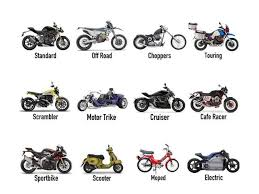

motorcycles
A motorcycle (motorbike, bike, or, if three-wheeled, a trike) is a two or three-wheeled motor vehicle steered by a handlebar from a saddle-style seat.[1][2][3] Motorcycle designs vary greatly to suit a range of different purposes: long-distance travel, commuting, cruising, sport (including racing), and off-road riding. Motorcycling is riding a motorcycle and being involved in other related social activities such as joining a motorcycle club and attending motorcycle rallies. The 1885 Daimler Reitwagen made by Gottlieb Daimler and Wilhelm Maybach in Germany was the first internal combustion petroleum-fueled motorcycle. In 1894, Hildebrand & Wolfmüller became the first series production motorcycle.[4][5] Globally, motorcycles are comparable numerically to cars as a method of transport: in 2021, approximately 58.6 million new motorcycles were sold around the world, while 66.7 million cars were sold over the same period.[6] In 2022, the top four motorcycle producers by volume and type were Honda, Yamaha, Kawasaki, and Suzuki. According to the US Department of Transportation, the number of fatalities per vehicle mile traveled was 37 times higher for motorcycles than for cars.[7]
